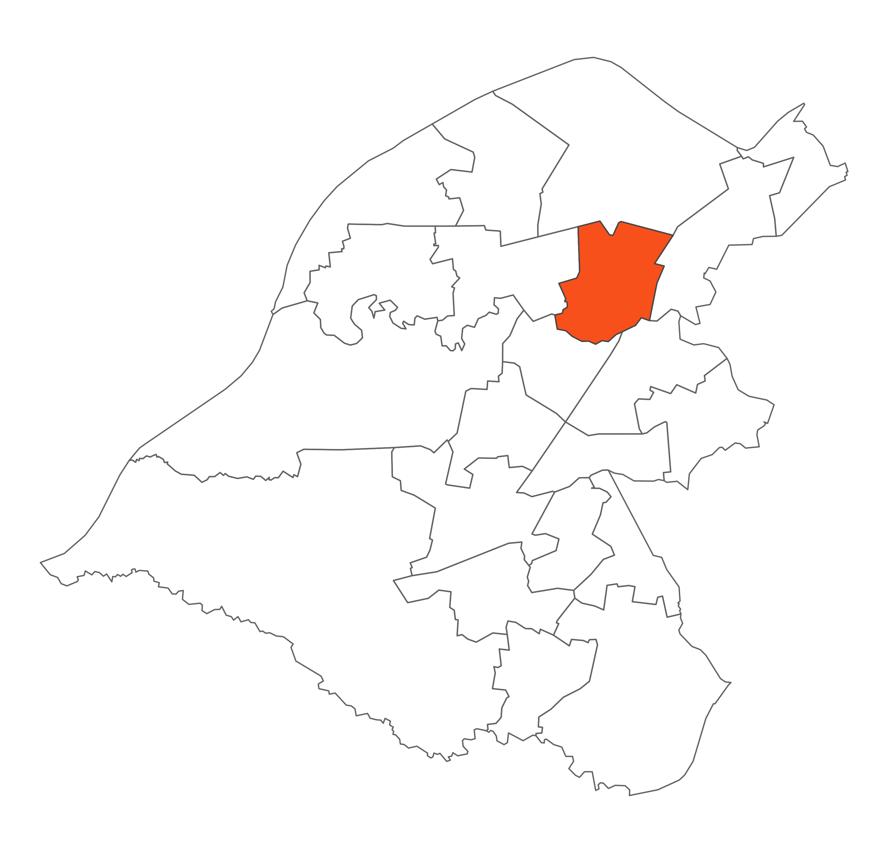

 Stretford is a densely populated ward. The M60 motorway and Bridgewater Canal run through the ward. The River Mersey is the southern boundary and the residential areas of Stretford and Urmston are adjacent boundaries. The ward contains Stretford Town Centre and Stretford Mall. The ward itself does not rank particularly highly in terms of deprivation but it has pockets of very high deprivation. The majority of the ward is greenbelt land and forms part of the Mersey Valley. To the south west of the ward lie Kickety Brook and the Stretford Ees providing a natural habitat for wildlife. The Trans Pennine Trail runs alongside the Brook providing a pleasant walking environment. The ward is very mixed socially.
Trafford Council approved the Stretford Town Centre Masterplan in January 2014. The Masterplan provides a bold vision for delivering transformational change to Stretford Town Centre and represents a significant step forward in setting out a route to securing a sustainable economic future for the town centre. It will provide a framework for delivering the successful regeneration of Stretford Town Centre over the next 10 to 15 years.